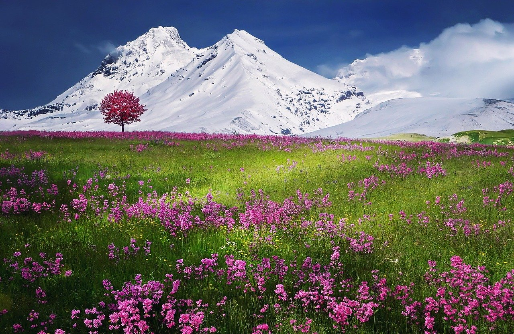

Гора, гірська споруда
форма рельєфу, різке локальне ізольоване піднесення земної поверхні над сусідніми відносно вирівняними ділянками, що характеризується чіткою лінією підошви (границею переходу від рівнини до власне гори), різкими коливаннями відносних висот. Загалом горами вважають елементи рельєфу з абсолютними висотами, вище 600 м над рівнем моря.
Найвища гора на Землі — Джомолунгма, котра має у висоту 8 848 метрів над рівнем моря. Якщо вимірювати різницю висот між вершиною та підводною основою — найвищою горою на Землі можна вважати вулкан Мауна-Кеа, котрий, рахуючи вище наведеним способом, нараховує 10 230 метрів, з яких тільки 4 207 здіймаються над рівнем моря. Якщо рахувати за віддаленістю від центру Землі — найвіддаленішою від центру точкою земної поверхні є стратовулкан Чимборасо. Найвища відома гора в Сонячній системі — гора Олімп, щитовий вулкан на Марсі, який має висоту 22 км.
Гори і людина
В антропогеографічному відношенні гори являють собою досить різноманітний і нерідко складний комплекс географічних умов. При аналізі цих умов антропогеографія на перший план висуває індивідуально-географічні умови того чи іншого гірського ландшафту, причому в їх зв'язку з умовами історичними, економічними та іншими. Наприклад, при виборі як шляхів сполучення тих чи інших перевалів історичні, економічні та стратегічні умови нерідко відігравали більшу роль, ніж умови природні. Але й середні гіпсометричні та кліматичні дані далеко не байдужі для антропогеографії, особливо середні висоти над рівнем моря, тому що в залежності від них відбувається розподіл населення.
Характеристика
Гора завжди формується силами, які впливають на гравітаційний баланс шляхом підняття (чи нарощування) порід. У результаті дисбаланс призводить до підвищення рельєфу шляхом ізостатичної компенсації (плавучості кори в мантії) і потовщення земної кори (які можуть відбуватися зазвичай на глибинах від 30 км до 60 км). Окрім вершини, гора складається з основи і кореня, утворених складками геологічних шарів: основа і корінь мають потужність більшу, ніж висота вершини. Глибину коренів можна оцінити через гравітаційну аномалію, яку вона породжує (до декількох десятків кілометрів у глибину).
Геологічна будова і морфологія гір визначає склад гірських порід, можливість економічно обґрунтованого видобутку корисних копалин.
Для гір характерна вертикальна поясність ландшафтів, місцеві особливості якої залежать від географічної широти, характером простягання, відносною і абсолютною висотою.
Гірська країна
Гірська країна — значна ділянка земної поверхні, що піднята над навколишнім простором і характеризується значними абсолютними висотами. Характерною особливістю виступає значна різниця висот між високими і низькими ділянками. Гірські країни часто ясно розділяються гірськими долинами на окремі гірські групи і масиви (гірська група без вираженого простягання в будь-якому напрямку). Серед усіх типів схилів у гірських країнах превалюють схили крутизною 20-30°.